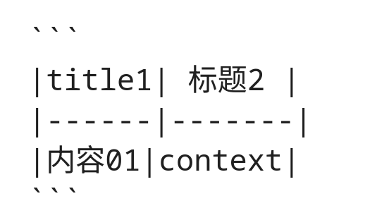
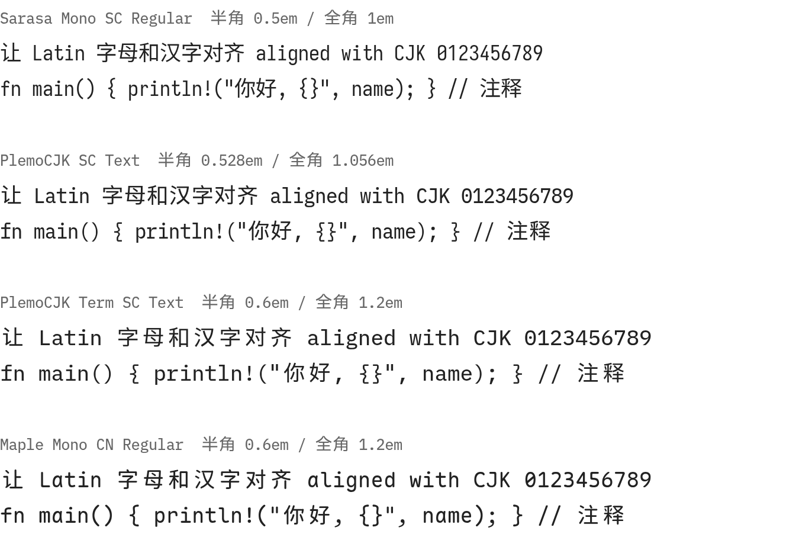

中英文混排的等宽字体：半角和全角宽度 1:2
它是 PlemolJP 的扩展。PlemolJP 用 IBM Plex Mono 和 IBM Plex Sans JP 合成了一款日文编程字体，PlemoCJK 用同样的方法做了四个地区的版本：
01
常见字体的半角 0.6em、全角 1em，宽度比 3:5，中英文混排很难对齐。
这一页用的是 PlemoCJK，所以能对齐：
|title1| 标题2 |
|------|-------|
|内容01|context|一般的编辑器里，汉字 1em 而字母 0.6em，含中文的行就短了一截。

| 字体 | 半角 | 全角 | 代价 |
|---|---|---|---|
| Sarasa Gothic | 0.5em | 1em | 英文多时太挤 |
| PlemolJP / PlemoCJK | 0.528em | 1.056em | 字母缩放，汉字加间距 |
| Maple Mono CN | 0.6em | 1.2em | 汉字之间偏松 |
PlemolJP 放弃了汉字 1em 的习惯，换来更和谐的排版，所以选它做基础。

| 变体 | 半角 / 全角 | 箭头、框线 | 用途 |
|---|---|---|---|
| default | 528 / 1056 | 全角 | 中文为主，比如这份幻灯片 |
| Term | 600 / 1200 | 半角 | 终端，英文为主且要严格对齐 |
| Natural | 600 / 1000 | 全角 | 对齐要求不高的场合 |
02
扩充字体本身不复杂，精力都花在微调上。
有些字符在东亚编码里算全角，在别处算半角。Term 一律按半角，其他变体这样划分：
画 ASCII art 时打开 hwid，全部按半角渲染。
框线按字体自带的 1.25 行高相接，到网页常用的 1.6 就断开了。ss16 把它们拉长：
pre {
line-height: 1.6;
font-feature-settings:
"hwid", "ss16";
}┌────────────┐ █ ░ ▒ ▓ │ ss16 打开 │ █ ░ ▒ ▓ └────────────┘ █ ░ ▒ ▓
/* 1 */
@font-face {
font-family: 'PlemoCJK SC';
font-weight: 100;
src: url('SC/PlemoCJK-SC-Thin.1.woff2');
unicode-range: U+2DB-587;
}
/* …分片 1 的其余十五个样式… */按 Noto Sans SC 的 unicode-range 切成两百多片，只下载用到的。
同一分片的规则排在一起，gzip 能去重：CSS 是 16 倍，传输不到 2 倍。
plemocjk-scREADME-zh.md